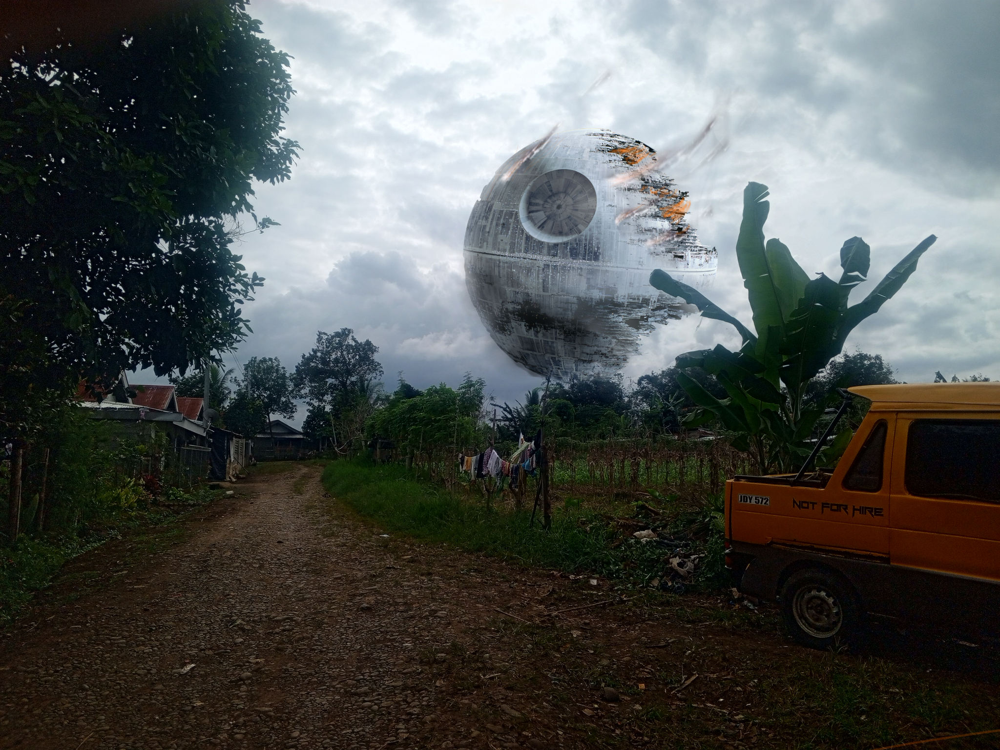
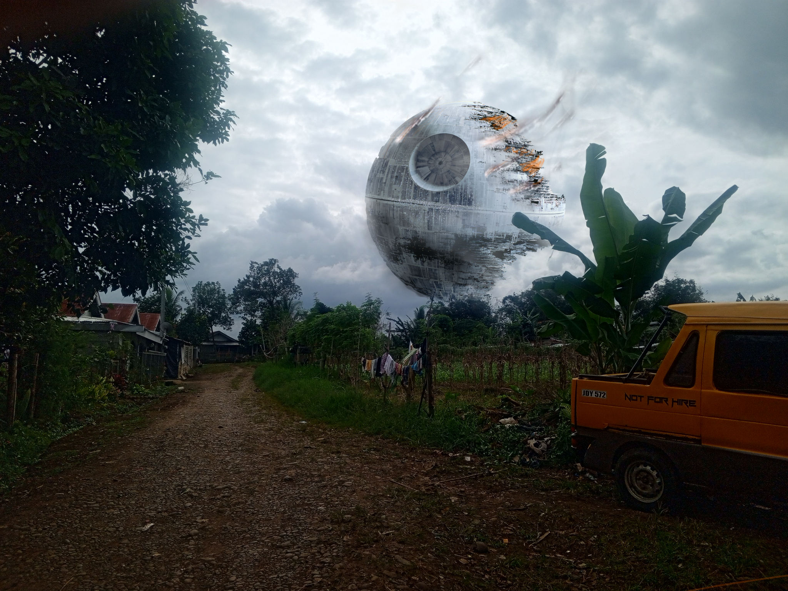

ICT 11 NOVEMBER
James Eraño Macahelos

A manual coded website.
A manual coded website.
Welcome to our digital hub! 🌐 Explore the world of Information and Communication Technology (ICT) on our site:
🖥 **Tech Fusion:** Discover the dynamic blend of hardware and software driving ICT innovation.
🌐 **Connectivity Hub:** Dive into the core of digital communication and seamless collaboration.
⚙️ **Behind the Code:** Peek into our manual coding journey, crafting a unique online experience.
🌐 **Custom Touch:** [Briefly describe your website's unique aspect or focus.]
Experience the synergy of tech and creativity with us! 🔗 #TechRevolution #DigitalInnovation
Image manipulation refers to the process of altering or enhancing digital images using various techniques and tools. It involves adjustments such as resizing, cropping, color correction, and the application of creative effects to achieve desired visual results. Image manipulation can be performed for artistic purposes, photo enhancement, or to convey a specific message, and it is commonly done using software like Adobe Photoshop, GIMP, or other graphic design tools.
 

Shape manipulation is the process of altering the form and arrangement of visual elements in an image or design. It involves changing shapes, creating new forms, and enhancing overall composition for artistic or design purposes.
My portfolio website is a testament to my coding expertise, meticulously crafted through my dedication and skills acquired from free online courses. Every line of code reflects my commitment to authenticity, as I've never relied on pre-built websites. From the intricate backend architecture to the user-friendly frontend, each element bears the mark of my manual coding efforts, showcasing not only a digital presence but also a personal narrative of growth and learning in the realm of web development.
Note. The portfolio website is not included in this site please top the button below to visit my portfolio website.